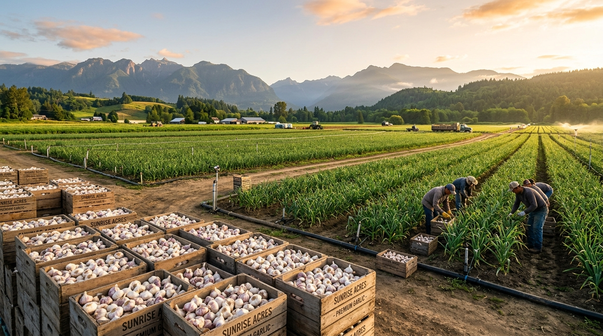
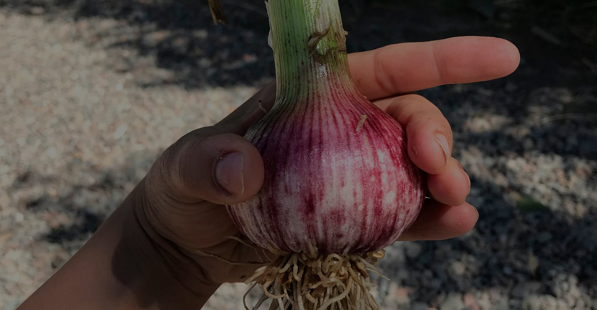
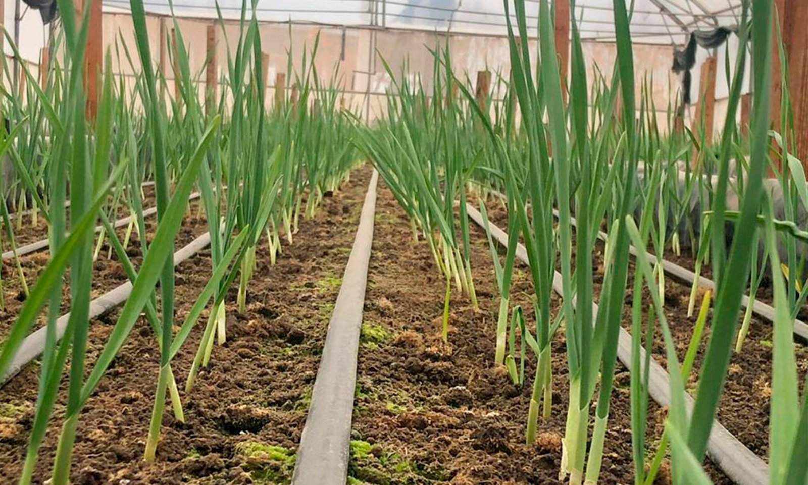
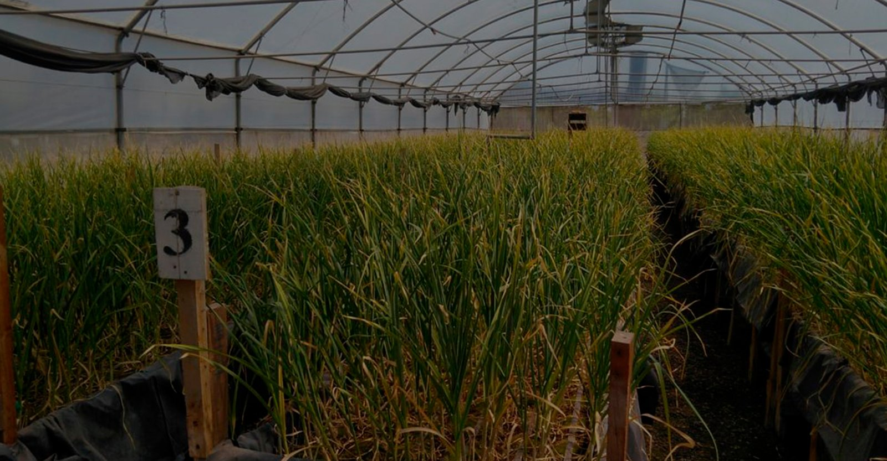
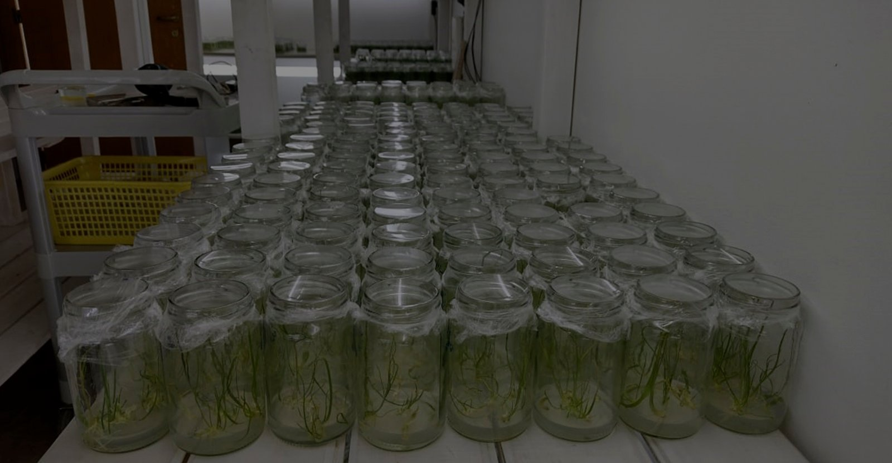
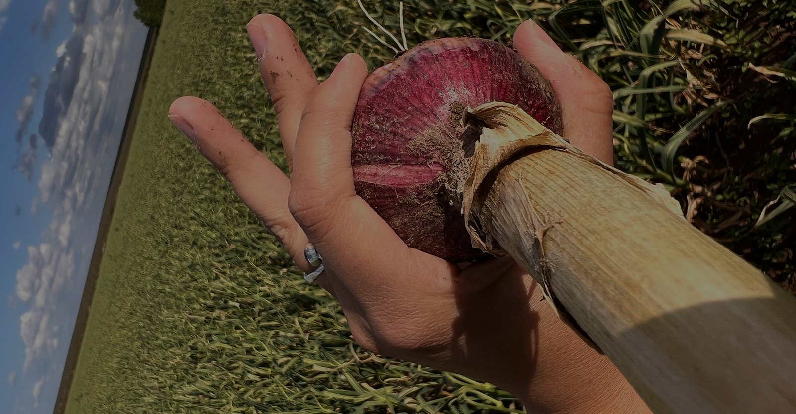
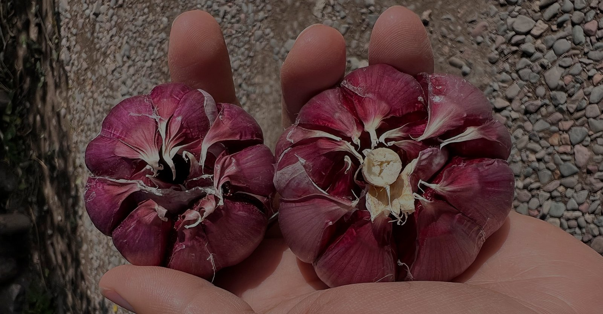
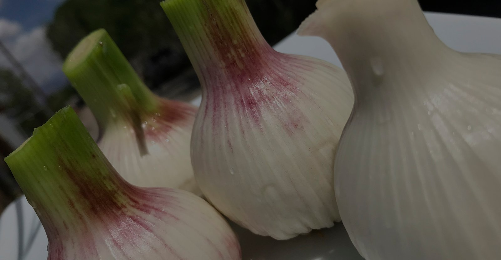
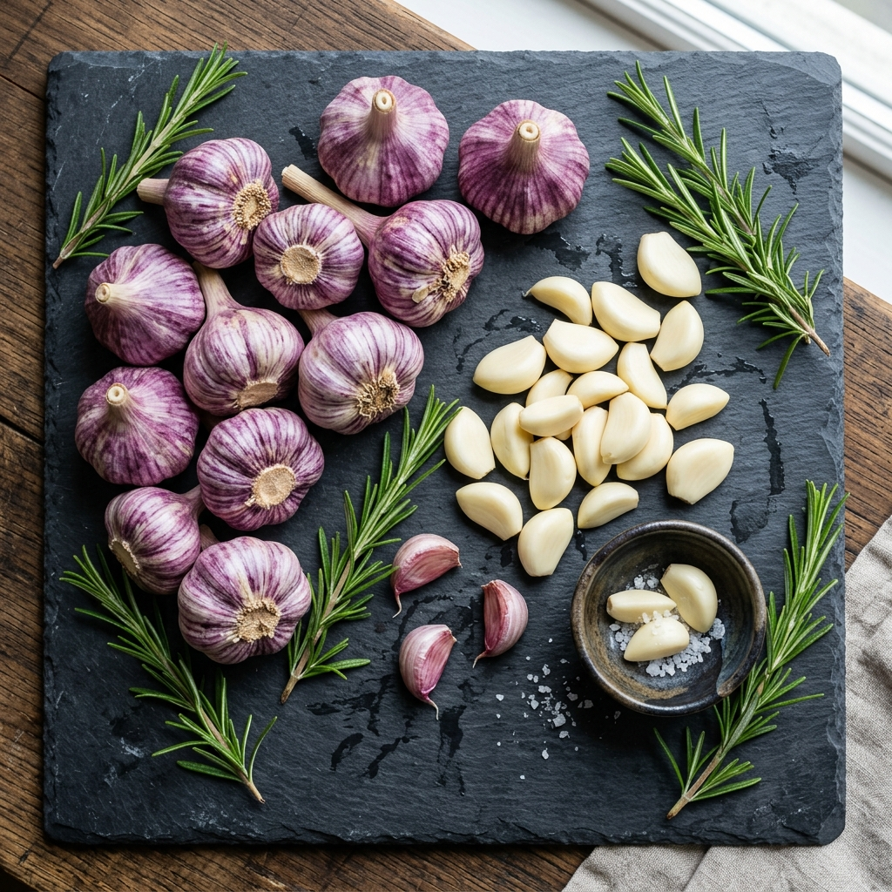

Especialistas en Producción de Ajo: Calidad en Producción
En Agropettina cultivamos con dedicación y biotecnología agronómica: productores líderes de Ajo Morado Isabella, Ajo Blanco y Ajo Colorado Italo 2015, junto a cebollas selectas y verduras de huerta. Más de 35 años de experiencia del grupo llegando a los mercados más exigentes del mundo.
El Origen de Nuestra Calidad
Ubicados al pie de la Cordillera de los Andes, las condiciones climáticas del Valle de Uco brindan una amplitud térmica inigualable y agua pura de deshielo, ideales para la maduración de ajos con alto tenor aromático, firmeza y color vibrante.
Genética y Sanidad Superior
Nuestro laboratorio propio en Río Negro garantiza simientes 100% libres de virus, manteniendo el vigor de cada clon generacional.
Cosecha y Curado Tradicional
El secado natural en eras y secaderos aireados permite el cierre natural de las túnicas, evitando la deshidratación prematura.
Alcance Internacional
Exportación a granel y confeccionada en cajas de 10kg, 13.6kg (30 lbs) y mallas para Brasil, Norteamérica y Europa.

Ajos Seleccionados con Sello Cuyano
En Agropettina y BioCuyo cultivamos tres variedades insignes adaptadas al terruño de Mendoza:
Ajo Morado Isabella (Purple Spring)
Estrías violetas intensas, aroma penetrante y alto valor comercial. Cosecha temprana en noviembre/diciembre.
Ajo Blanco (White Garlic)
Rústico, resistente y carnoso. Extraordinaria vida útil para transporte marítimo de ultramar sin mermas.
Ajo Colorado Italo 2015 (Red Garlic)
Bautizado en honor a uno de nuestros hijos. Tallo duro, piel roja vibrante, el más picante y aromático de todos.
Cebollas y Zanahorias de Huerta
Cultivadas en rotación agronómica para regenerar el suelo y abastecer mercados con frescura permanente.
Productos de Exportación y Mercado Interno
Consulta los calibres, envases y especificaciones de nuestras cosechas de Valle de Uco.
Laboratorio Propio en Río Negro
Contar con nuestro propio laboratorio en la provincia de Río Negro nos brinda la garantía absoluta de que nuestras semillas se encuentran totalmente libres de virus o enfermedades, asegurando el rendimiento y la pureza genética de nuestros cultivos año tras año.
-
✔
Aislamiento y saneamiento meristemático: Cultivo in vitro que regenera plantas madre libres de fitopatógenos.
-
✔
Multiplicación en zonas libres de vectores: Multiplicación de simientes en climas patagónicos controlados.
-
✔
Calidad trazable desde el tubo de ensayo: Trazabilidad completa desde la plántula hasta el bulbo exportado.



Seguinos en Instagram @agropettina
Día a día en la tierra: preparación del suelo, labores con tractores John Deere, siembra en surco, cosechas frescas y el trabajo de nuestra gente.




Cotizador de Cargas y Exportación B2B
Cotiza envíos nacionales o contenedores completos (FCL/FTL) para exportación a Brasil, América del Norte y Europa.
Resumen del Requerimiento
2 variedadesVariedades seleccionadas para cotización formal:
Respuestas a Importadores y Mayoristas
Información clave sobre origen, despacho y certificaciones.
Ambas empresas pertenecen al mismo grupo y fundador. Agropettina centraliza la producción, labor de campo y biotecnología agrícola en Valle de Uco, mientras que BioCuyo Exportaciones S.A.S. gestiona las operaciones de comercio exterior y exportación directa a Brasil, Norteamérica, Europa y Oceanía.
El Ajo Morado Isabella es la variedad más valiosa del mercado global por su coloración violácea viva y su altísima demanda temprana. El Ajo Colorado Italo 2015 (bautizado en honor a uno de nuestros hijos) es una variedad de tallo duro y piel roja con el mayor contenido picante y aromático en el paladar.
A través del aislamiento de meristemas in vitro y análisis virológicos continuos, logramos semillas 100% libres de virus (OYDV, LYSV, etc.), lo que se traduce en plantas más vigorosas, calibres grandes y mayor resistencia postcosecha.
Adaptamos el empaque según los requerimientos del cliente: cajas de cartón de 5 kg (11 lbs), 10 kg, o 13.6 kg (30 lbs), además de mallas de 250g, 500g y 1kg, y big bags para industria.
Agropettina S.A.S.
Atendemos requerimientos de compra mayorista, programas de provisión por temporada y visitas técnicas a nuestras fincas de Valle de Uco, Mendoza.
Fincas de Producción
Valle de Uco, Mendoza, Argentina